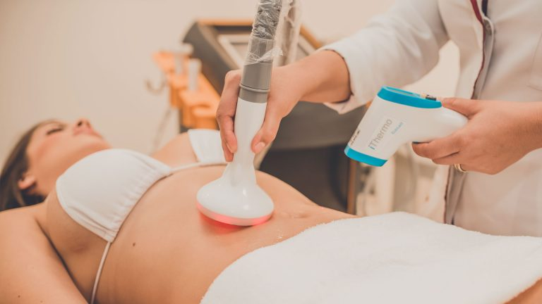

O que a nossa empresa faz?
Oferecemos serviços de beleza, saúde e higiene, como tratamentos faciais e corporais. Estes tratamentos podem ser realizados manualmente ou com o auxílio de equipamentos específicos. Esses serviços podem incluir: Tratamentos faciais; Cuidados corporais; Depilação; Manicure e pedicure; Maquiagem; Procedimentos estéticos e Consultoria de imagem; Orientações sobre estilo, moda e cuidados pessoais. Nossa equipe busca proporcionar não apenas resultados estéticos, mas também promover a autoestima e o bem-estar dos clientes, criando um ambiente relaxante e acolhedor.
Qual a missão da nossa empresa?
A nossa missão como empresa de estética é proporcionar aos clientes bem-estar físico, autoestima e satisfação por meio de serviços de beleza e cuidados pessoais. Isso envolve não apenas a aplicação de técnicas e tratamentos de estética, mas também a criação de um ambiente acolhedor e profissional, onde cada cliente se sinta valorizado e respeitado. A empresa busca promover a saúde da pele, o cuidado com o corpo e a imagem pessoal, sempre com foco em resultados eficazes e na educação sobre hábitos saudáveis. Além disso, é fundamental que a empresa esteja atualizada com as tendências do setor e utilize produtos de qualidade, assegurando a segurança e o conforto de todos os clientes.
Qual a visão da nossa empresa?
Procuramos oferecer o melhor atendimento para a total satisfação do cliente por meio de relacionamentos humanizados, ambiente agradável, profissionais qualificados, produtos de qualidades e equipamentos de última geração. Também temos como objetivo sermos reconhecidas como a principal referência em estética e bem-estar, proporcionando experiências transformadoras e personalizadas aos nossos clientes. Buscamos não apenas realçar a beleza externa, mas também promover a autoestima e a saúde integral, através de serviços de alta qualidade, inovação constante e um atendimento acolhedor. Valorizamos a formação contínua de nossa equipe e a utilização de produtos sustentáveis, contribuindo para um mundo mais saudável e bonito.

Por que fazer estética facial?
A estética facial é uma área que trata da saúde e beleza do rosto, corrigindo linhas de expressões, marcas e cicatrizes e diversos outros aspectos, através de um conjunto de procedimentos que fornece harmonia para o rosto e o bem-estar em geral dos pacientes.
Fazer estética facial pode ser uma experiência transformadora, além dos benefícios físicos, pode aumentar sua autoconfiança e autoestima. Quando você se sente bem com sua aparência, isso reflete em sua atitude e interações sociais. Além disso, dedicar um tempo para cuidar de si mesmo é essencial para o bem-estar emocional.
A estética facial não só melhora a aparência externa, mas também contribui para um maior cuidado consigo mesmo, promovendo saúde e felicidade. Se você busca uma pele mais bonita e saudável, vale a pena considerar esse investimento!
Orientação Profissional:

Por que fazer estética corporal?
Estética corporal é o conjunto de procedimentos que buscam o tratamento da flacidez, celulite e gordura localizada podendo incluir radiofrequência com infravermelho, ultrassom macrofocado, criolipólise, fio de sustentação, bioestimulação com preenchimento, lipoaspiração, lipoescultura e abdominoplastia. Fazer estética corporal pode trazer diversos benefícios, tanto físicos quanto emocionais melhorando sua autoestima.
Optar por estética corporal é uma escolha que vai além da aparência física. Trata-se de investir em você mesmo e no seu bem-estar. Quando você se sente bem com seu corpo, isso pode refletir em outros aspectos da sua vida, como relações pessoais e profissionais.
Além disso, a estética corporal oferece a oportunidade de receber orientações de profissionais sobre cuidados e hábitos saudáveis, contribuindo para uma vida mais equilibrada.
A estética corporal pode ser um importante aliado na busca por uma imagem que você se sinta confortável e satisfeito. Se você deseja melhorar a aparência do seu corpo e aumentar sua autoestima, vale a pena considerar essa opção!